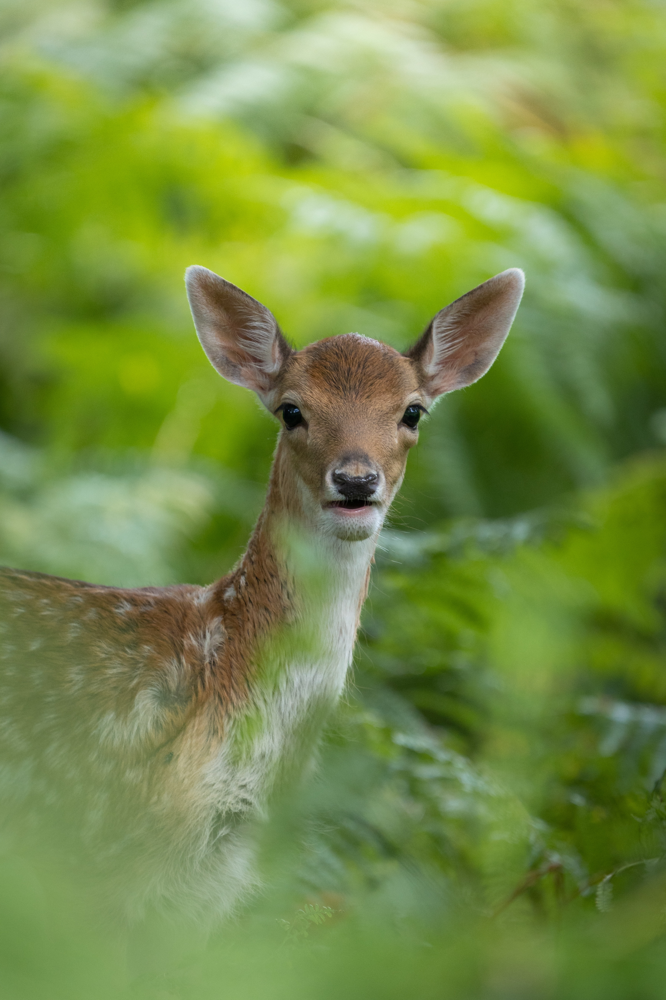
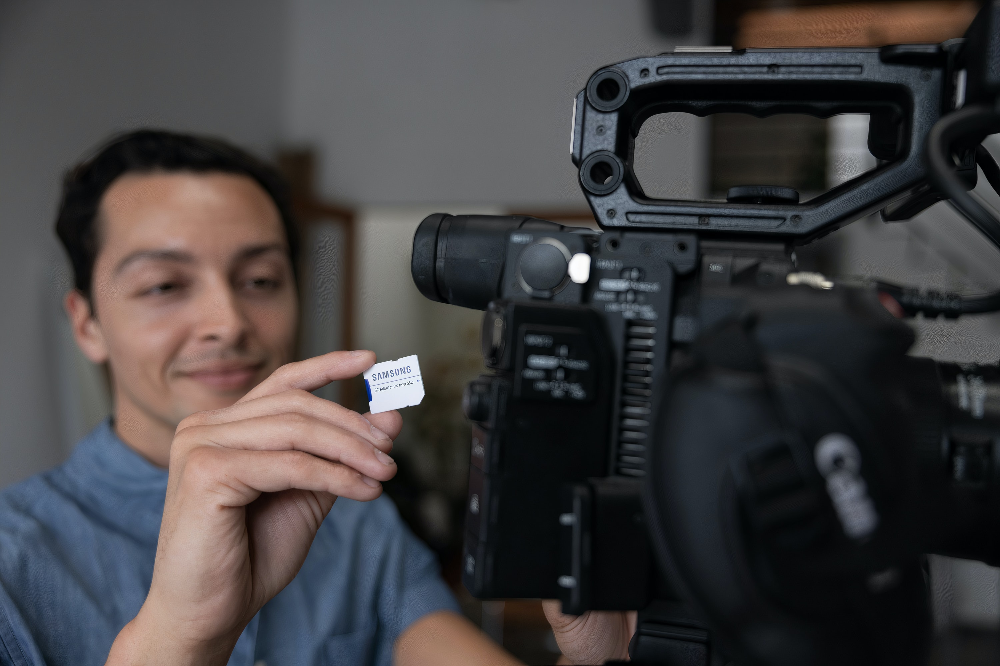
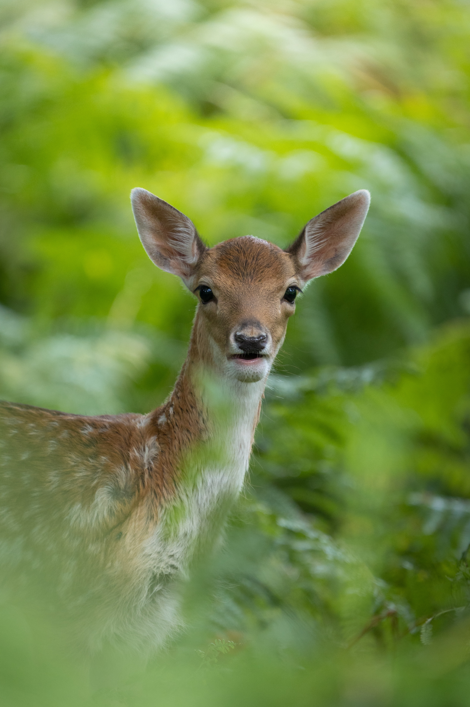
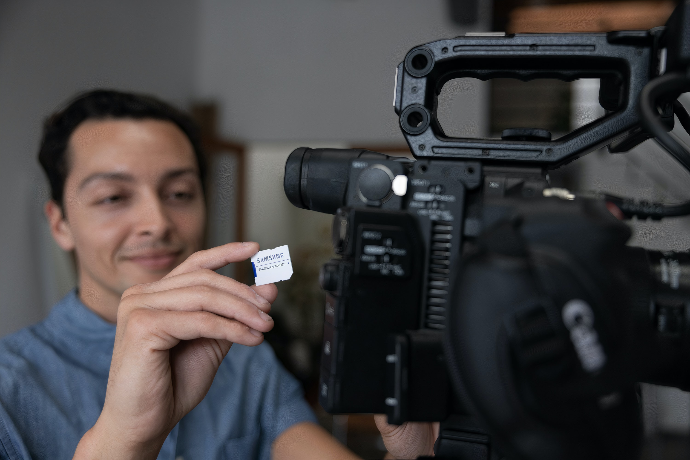

FOOD

Photography
 




Post
If your photos aren't good enough, then you're not close enough
When words become unclear, I shall focus with photographs
In photography there is a reality so subtle that it becomes more real
than reality
There is one thing the photograph must contain, the humanity of the
moment
I really believe there are things nobody would see if I didn't
photograph them — Diane Arbus
It's about reacting to what you see, hopefully without preconception.
You can find pictures anywhere.
It's simply a matter of noticing
things and organizing them.
You just have to care about what’s
around you and have a concern with humanity and the human comedy.” —
Elliott Erwitt
Photographs open doors into the past, but they also allow a look into
the future.” — Sally Mann
Contact
For more Information